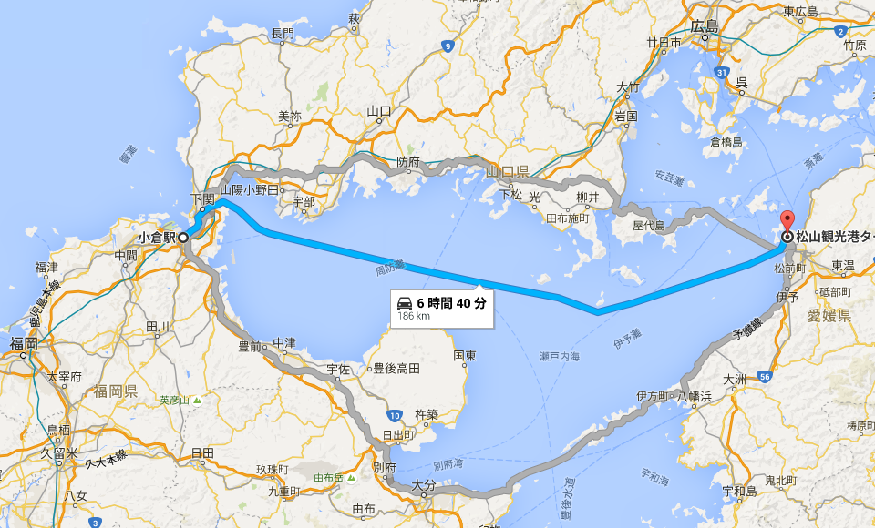
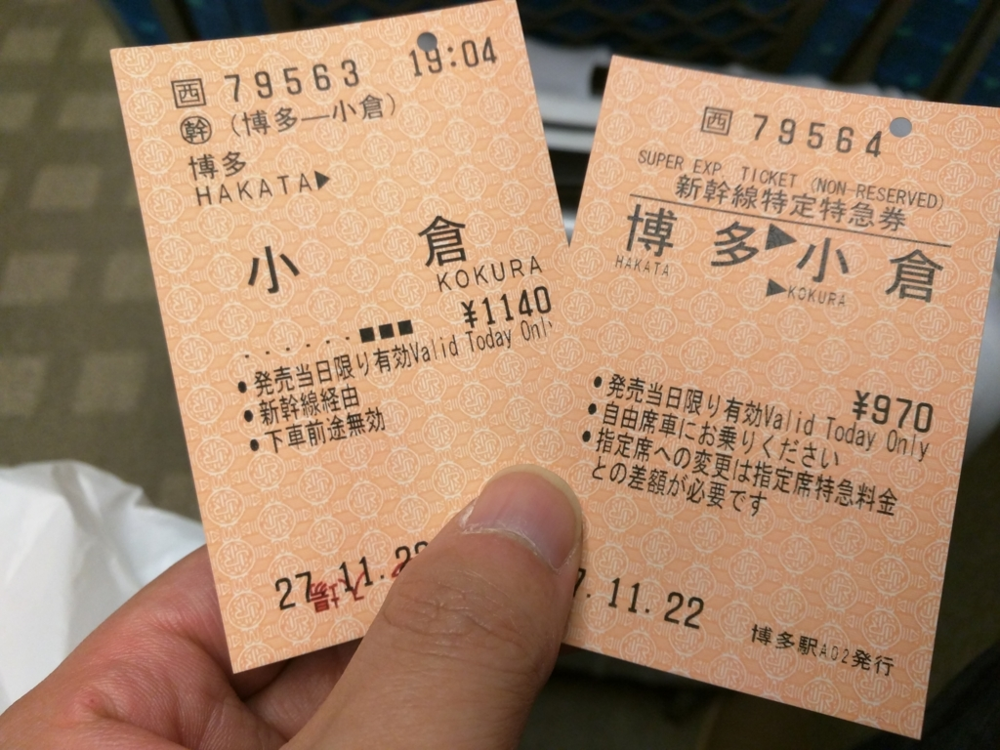
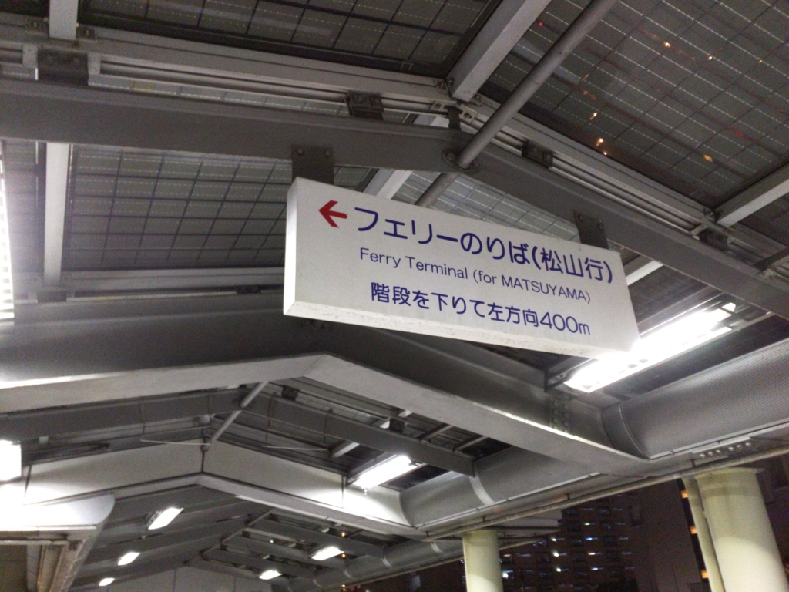
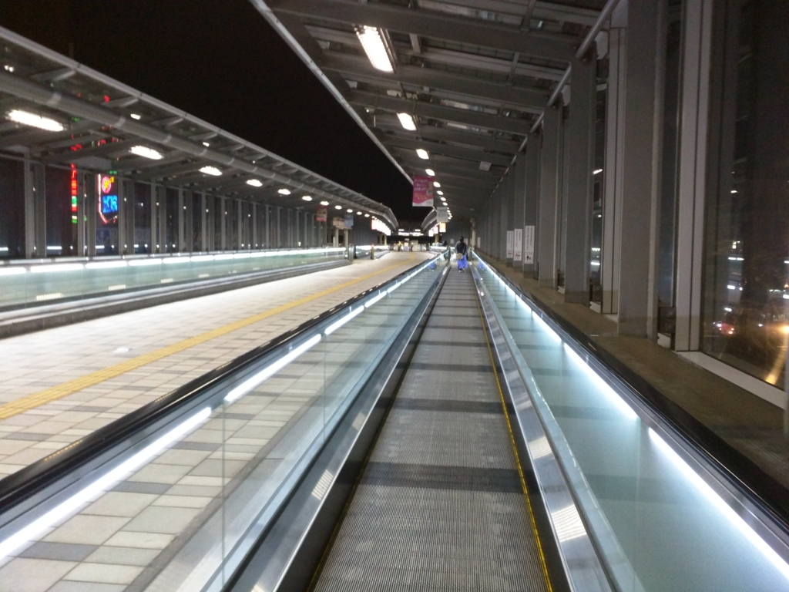
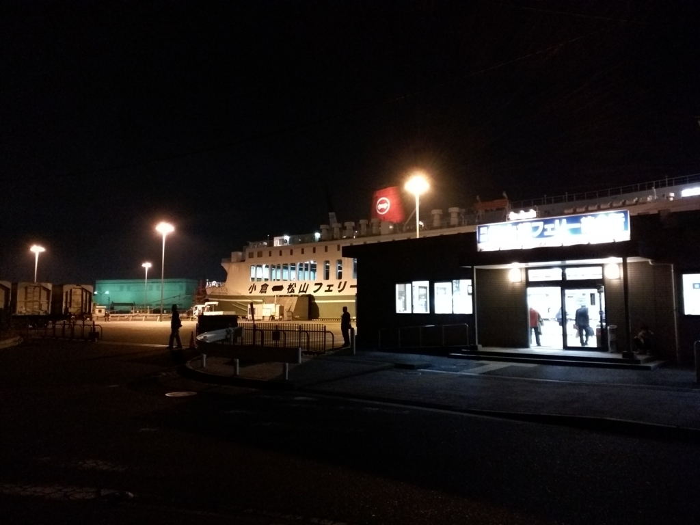
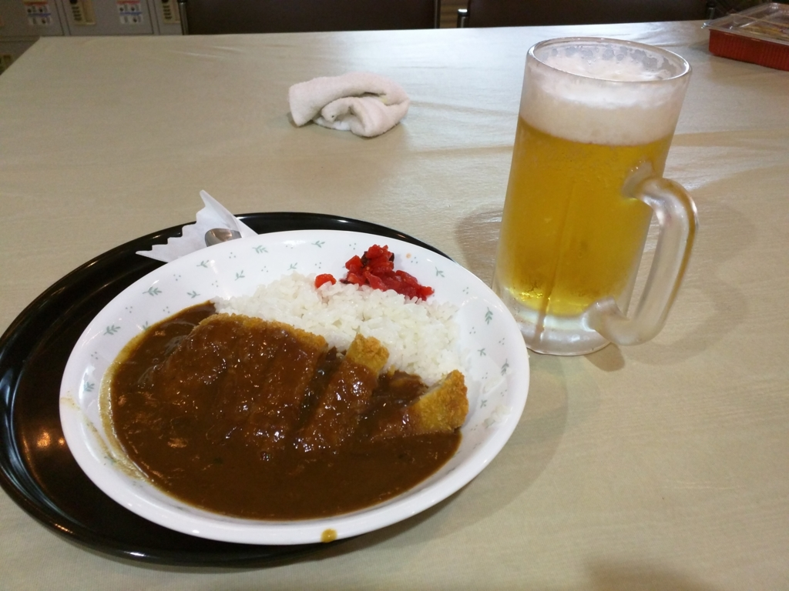
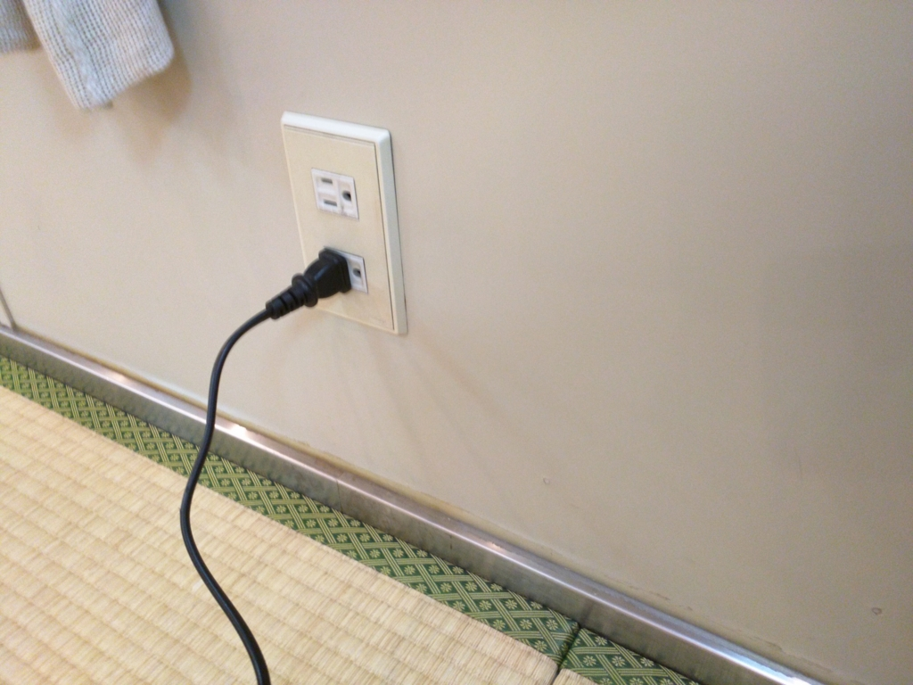
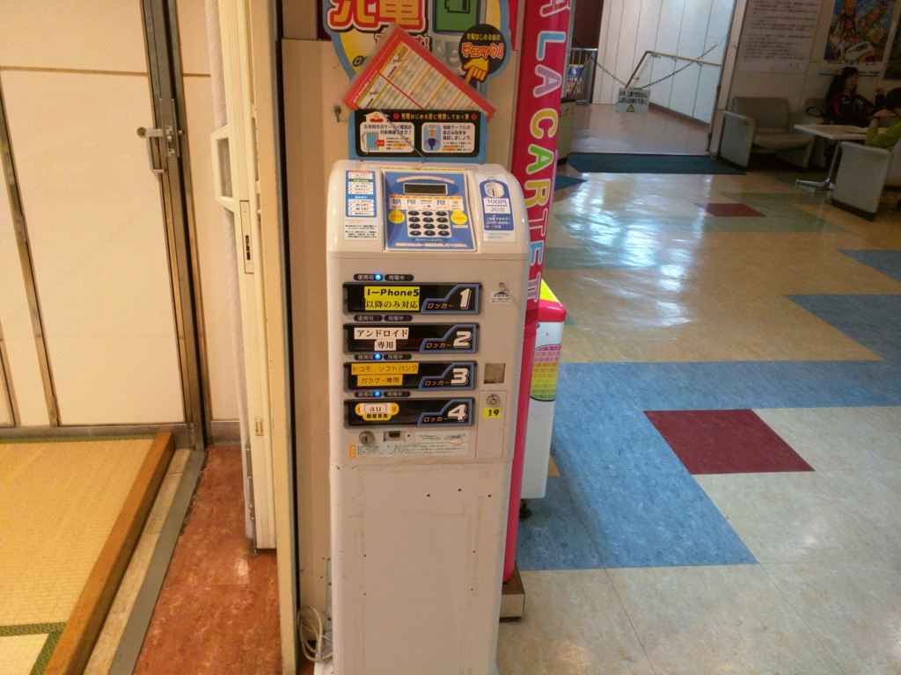
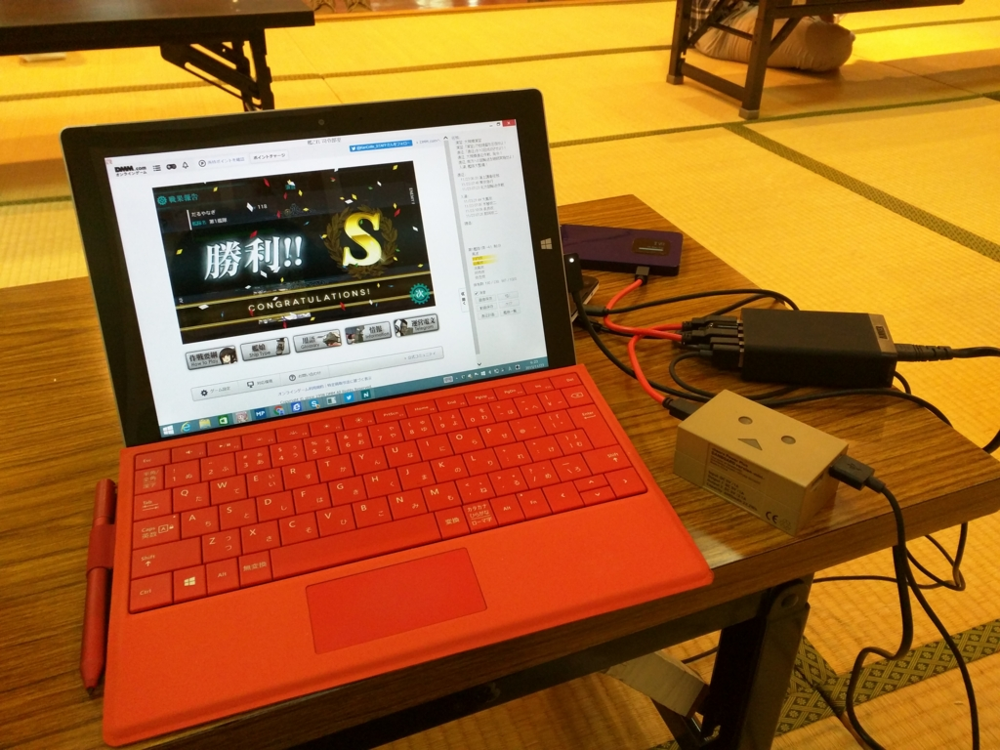

福岡その七：フェリーで松山まで帰ってきたった。
公開日：

太宰府詣りを済ませた僕たちは、博多駅でお別れ。
相抱く腕はほどけず、流す涙は交わり足下に池を為すに至れど、生きていく以上、別れは避けがたい。また彼の地を踏まんと決意を新たにしつつ――
デカいひよ子をお土産に買ったのじゃよ( *´艸｀)ｸﾞﾌﾌ
さて、松山まではフェリーを確保したのだけど、出港は小倉なので、そこまでは電車で行かなければならぬ。在来線でもいいのだが、めんどくさいので新幹線を使った。

〆て2,000円。距離と時間の割には高く感じるが、新幹線だしね、多少はね？

小倉駅からフェリーターミナルまでは少し歩かなければならない。道は難しくなく、重度の方向音痴でもない限り、Google マップ無しでも十分たどり着けると思う。

動く歩道があるとは、なかなか気が利いている。九州のテクノロジーは、四国よりも格段に進んでいるようだ。

フェリーターミナルは割としょぼかった。日曜日の帰り便ということもあってか、人も多い。僕は待合室の隅に座り、本を読んだり、Surface 3 で艦これをして遊びながら、乗船までの時間を潰した（ここ、フラグやで）。
船は関西航路（大阪～東予ルート）よりも少し小ぶりであるらしい。設備もサービスも少し貧弱だが、まぁ、それほど苦になるほどではない。たまたまお相撲さん（？）と乗り合わせたので、お風呂がえらく狭かったが、それも割と面白い経験だった。

お風呂でさっぱりした後は、じゃこカツカレーを食す。たまたま乗り合わせた客に若い学生らしき団体や、年配の酒のみ集団がいたせいか、食堂の雰囲気は関西航路よりも和気藹々とした感じ。じゃこカツカレーの味はまぁまぁといったところだが、じゃこカツを食べると「やっとこさ、帰れるなー」と、安心感のようなものが腹の底からこみあげてきて、思わずニマッとしてしまう。ビールも二杯飲んだ。

しかし、困ったのが電源の確保。今回乗った船には寝台にコンセントがなかったので、スマホや Surface 3 を充電することができぬ。一応、畳敷きの休憩所にいくつかコンセントが用意されているが、これは学生の団体が占領している。

有料の携帯充電コーナーもあるが、これももちろんキャパシティオーバーだ。乗船待ちの間にバッテリーを使い果たしていたので、これにはちょっと閉口した。寝る前に Kindle で本でも読もうかと思っていたのに。
しょうがないので、廊下にあったコンセントを使わせてもらったが（一応、乗員の方に許可はとってみた）、さすがに盗難が心配で離れることもできず、なんとも情けないことになった。今度この船に乗るときは、モバイルバッテリー必須だな。
追伸

その日は早寝早起き。休憩所で朝ご飯食べながら、めちゃくちゃバッテリーを充電した。